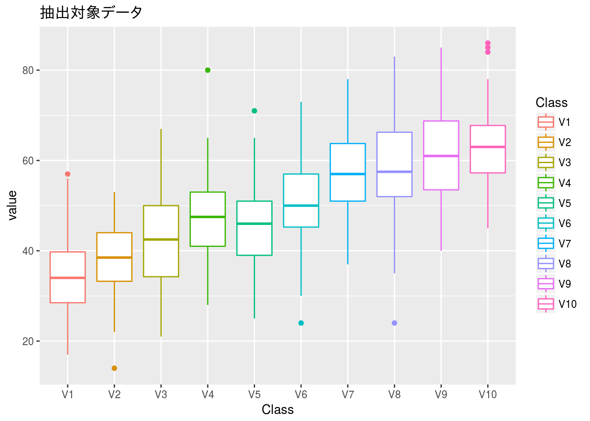
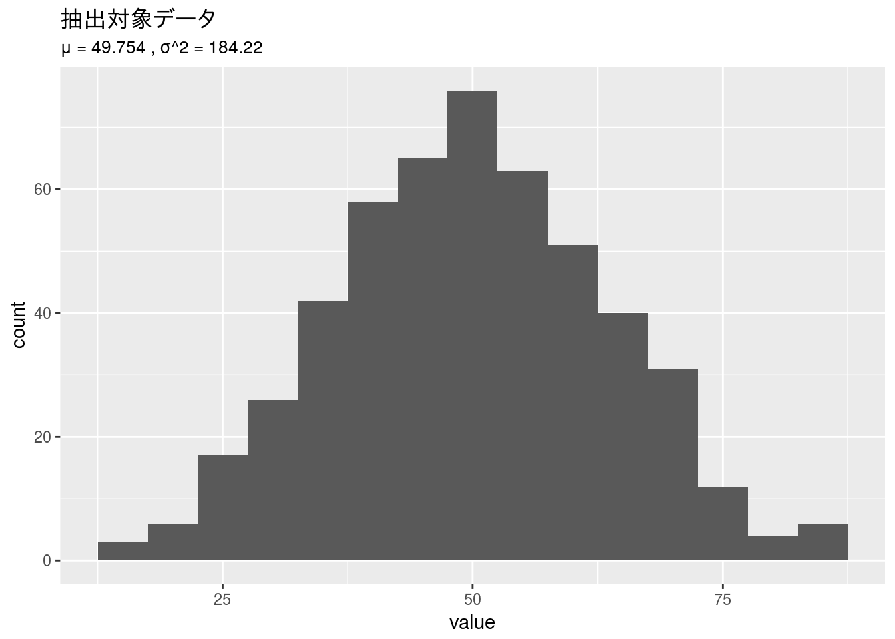
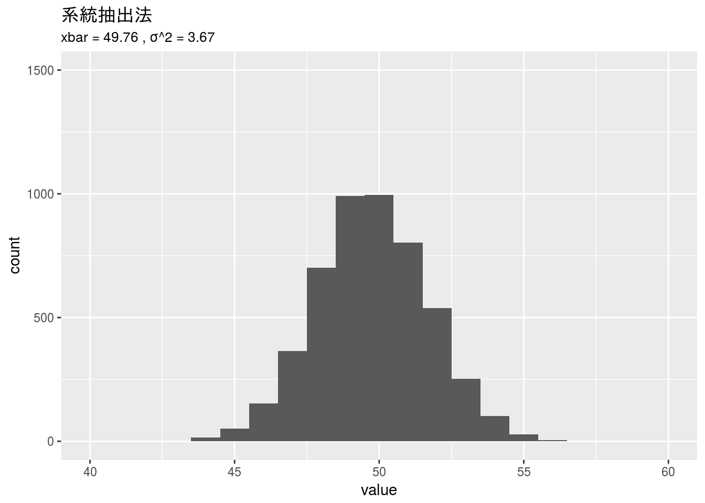
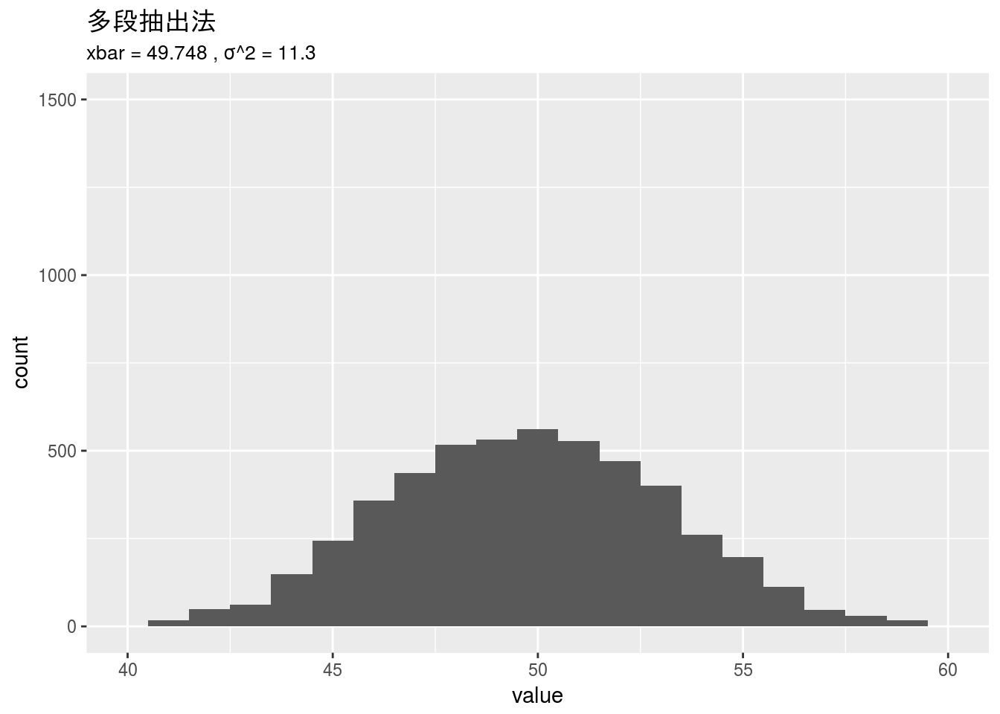
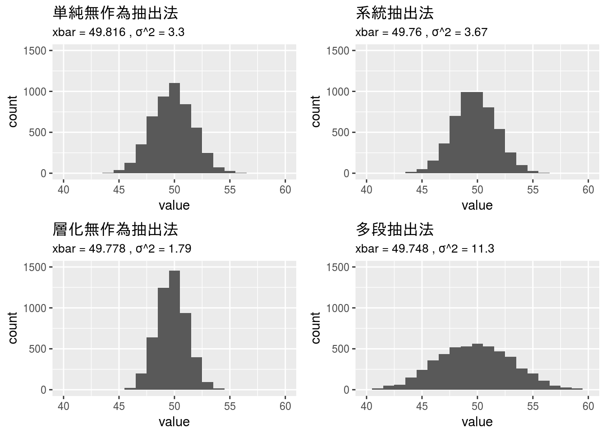

様々なサンプリング
サンプリングには様々な方法があります。サンプリング方法により結果がどのように変わるのか可視化してみます。
標本データとサンプリング条件
抽出方法の違いを比較するための対象データは「推定と標本抽出」（SlideShare） を参考に作成したデータと計算方法を用います。
# 参考先ではリスト型を用いたプログラムになっていますが、ここでは可視化に`ggplot2`パッケージを使うのでデータフレーム型で記述してあります。
set.seed(818)
x <- as.data.frame(
sapply(1:10,
function(i){
as.integer(rnorm(n = 50, mean = 50, sd = 10) + 3 * i - 16.5)
}
)
)
x_g <- tidyr::gather(x)
x_mean <- x %>%
tidyr::gather() %>%
dplyr::summarise(xbar = mean(value), var = var(value))
x %>%
tidyr::gather() %>%
dplyr::mutate(key = factor(key,
levels = c("V1", "V2", "V3", "V4", "V5",
"V6", "V7", "V8", "V9", "V10"))) %>%
ggplot2::ggplot(ggplot2::aes(x = key)) +
ggplot2::geom_boxplot(ggplot2::aes(y = value, colour = key)) +
ggplot2::ggtitle("抽出対象データ") +
ggplot2::xlab("Class") +
ggplot2::scale_colour_discrete(name = "Class") 
x %>%
tidyr::gather() %>%
ggplot2::ggplot(ggplot2::aes(x = value)) +
ggplot2::geom_histogram(binwidth = 5) +
ggplot2::ggtitle("抽出対象データ",
subtitle = paste("μ =", round(x_mean$xbar, 3),
", σ^2 =", round(x_mean$var, 2)))
このデータに対して単純無作為抽出法と系統抽出法、層化無作為抽出法、多段抽出法（どれも抽出自体はbase::sample関数を利用）を適用し、抽出方法によって推定の良さ（より母集団に近い値になるか）を確認します。手法は
- 全体で10組50件づつ（全500件）のデータから重複なしで50件を標本として抽出
- 抽出した50件のデータから平均（標本平均）を計算
- 上記の抽出と計算を5000回繰り返す
- 5000回分のデータから平均と分散を求める
とします。
単純無作為抽出法
単純無作為抽出法ですので、データ全体から50件抽出します。
s1 <- sapply(1:5000,
function(i){
mean(base::sample(x_g$value, size = 50, replace = sample_rep))
})
s1_mean <- data.frame(value = s1) %>%
dplyr::summarise(xbar = mean(value), var = var(value))
gg_1 <- data.frame(value = s1) %>%
ggplot2::ggplot(ggplot2::aes(x = value)) +
ggplot2::geom_histogram(binwidth = 1) +
ggplot2::xlim(40, 60) + ggplot2::ylim(0, 1500) +
ggplot2::ggtitle("単純無作為抽出法",
subtitle = paste("xbar =", round(s1_mean$xbar, 3),
", σ^2 =", round(s1_mean$var, 2)))
gg_1
系統抽出法
len <- as.integer(length(x_g$value))
step <- as.integer(len / 50)
s4 <- sapply(1:5000,
function(j){
sno <- as.integer(sapply(1:50,
function(i){
start <- base::sample(c(1:len), 1)
ifelse(start + step * i <= len,
start + step * i, start + step * i - len)
}))
mean(x_g$value[sno])
})
s4_mean <- data.frame(value = s4) %>%
dplyr::summarise(xbar = mean(value), var = var(value))
gg_4 <- data.frame(value = s4) %>%
ggplot2::ggplot(ggplot2::aes(x = value)) +
ggplot2::geom_histogram(binwidth = 1) +
ggplot2::xlim(40, 60) + ggplot2::ylim(0, 1500) +
ggplot2::ggtitle("系統抽出法",
subtitle = paste("xbar =", round(s4_mean$xbar, 3),
", σ^2 =", round(s4_mean$var, 2)))
gg_4
層化無作為抽出法
層化ですのでV1からV10までの各グループ毎に5件、全グループで50件を抽出します。
s2 <- sapply(1:5000,
function(i){
mean(sapply(1:10,
function(j){
base::sample(x[, j], size = 5,
replace = sample_rep)
}))
})
s2_mean <- data.frame(value = s2) %>%
dplyr::summarise(xbar = mean(value), var = var(value))
gg_2 <- data.frame(value = s2) %>%
ggplot2::ggplot(ggplot2::aes(x = value)) +
ggplot2::geom_histogram(binwidth = 1) +
ggplot2::xlim(40, 60) + ggplot2::ylim(0, 1500) +
ggplot2::ggtitle("層化無作為抽出法",
subtitle = paste("xbar =", round(s2_mean$xbar, 3),
", σ^2 =", round(s2_mean$var, 2)))
gg_2
多段抽出法
多段抽出法は、まず、ランダムに5グループを選び、次に選んだグループから各10件づつ、計50件を抽出します。
s3 <- sapply(1:5000,
function(i){
mean(
sapply(base::sample(1:10, 5, replace = sample_rep),
function(j){
base::sample(x[, j], size = 10,
replace = sample_rep)
})
)
})
s3_mean <- data.frame(value = s3) %>%
dplyr::summarise(xbar = mean(value), var = var(value))
gg_3 <- data.frame(value = s3) %>%
ggplot2::ggplot(ggplot2::aes(x = value)) +
ggplot2::geom_histogram(binwidth = 1) +
ggplot2::xlim(40, 60) + ggplot2::ylim(0, 1500) +
ggplot2::ggtitle("多段抽出法",
subtitle = paste("xbar =", round(s3_mean$xbar, 3),
", σ^2 =", round(s3_mean$var, 2)))
gg_3
比較結果
単純無作為抽出法と層化無作為抽出法の結果を比較して分かるように今回のような傾向をもつデータに対しては層化無作為抽出法を用いた方がより母集団に近い平均値の推定値を求められると言えます。
data.frame(rowname = c("母集団", "単純無作為抽出法", "系統抽出法",
"層化無作為抽出法", "多段抽出法"),
xbar = c(x_mean$xbar, s1_mean$xbar, s4_mean$xbar, s2_mean$xbar,
s3_mean$xbar),
var = c(x_mean$var, s1_mean$var, s4_mean$var, s2_mean$var,
s3_mean$var)) %>%
dplyr::mutate(xbar = round(xbar, 1), var = round(var, 2))
gridExtra::grid.arrange(gg_1, gg_4, gg_2, gg_3, ncol = 2)
 CC BY-NC-SA 4.0, Sampo Suzuki [2018-04-15 21:33(JST)]
CC BY-NC-SA 4.0, Sampo Suzuki [2018-04-15 21:33(JST)]